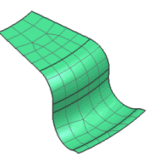
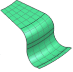

2D 网格、3D 四面体网格和 3D 扫掠网格对话框上的尝试自由映射网格划分选项允许您在自由网格环境中创建类似于映射的网格。这些类型的网格称为“自由映射”网格。
使用自由映射网格时，软件会尝试在所有四边面上以及任何圆柱上创建映射网格。
自由映射网格能提供自由网格的灵活性，同时提供结构化程度更高的映射外观。
|

|
|

|
自由映射网格的限制：
软件只能在四边面和圆柱上创建自由映射网格。在某些情况下，软件可能无法在四边面上创建自由映射网格。当四边面位于受限制区域或与其他面上的现有网格相邻时，会发生这种情况
如果面的边界非常歪斜，自由映射网格划分方法实际创建的网格可能会比规则自由网格质量差。因此，软件不会在歪斜角超过 160° 的任何面上创建自由映射